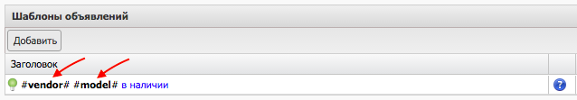
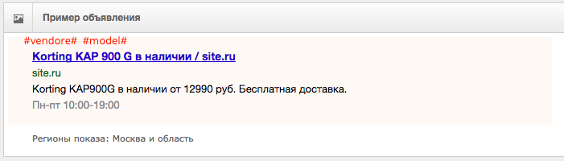
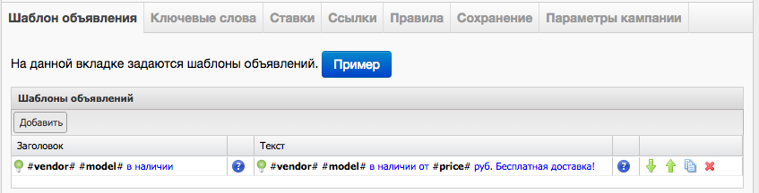
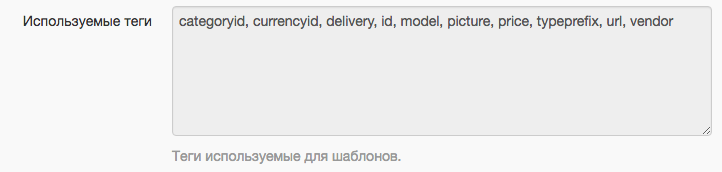
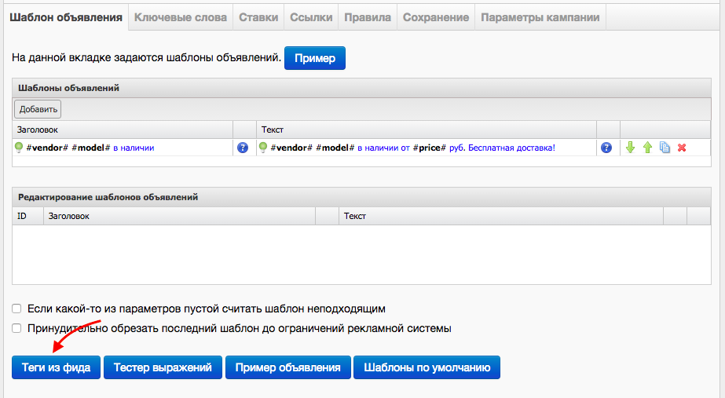
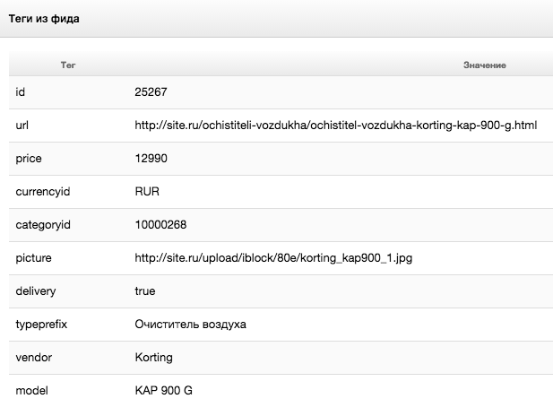

Область применения тегов
Тегами называются названия столбцов в файле формата CSV или названия колонки в файле формата YML.Теги могут быть использованы в нескольких разделах кампаний К50:Генератор:
- Шаблоны для ключевых слов (вкладка Ключевые слова)
- Шаблоны для текстов объявлений и заголовков (вкладка Шаблоны объявлений)
- Выражение для URL (вкладка ссылки)
- Шаблоны дополнительных ссылок (вкладка ссылки)
- Шаблоны для названия кампаний (вкладка настройки кампаний)
Синтаксис
1) Теги отделяются от текста знаком # (решетка)
Пример: #vendore# #model# в наличии

2) При генерации кампании на место каждого тега подставляется соответствующее значение тега из фида.
Пример: В заголовок объявления вместо #vendore# подставилось Korting
вместо #model# подставилось KAP900G

3) Выражение может состоять из нескольких тегов, текста и специальных символов, которые являются допустимыми по правилам Яндекс.Директ
Пример: #vendor# #model# в наличии от #price# руб. Бесплатная доставка!

4) Для того, чтобы использовать # в качестве символа, а не в качестве разделителя, ее нужно экранировать, то есть # заменять на \#.
Символ # может понадобиться:
-
в качестве хештега(якоря) в ссылке. Так например в К50:Генератор необходимо вместо адреса:
http://site/delivery/#creditпрописать адресhttp://site/delivery/\#credit -
для использования шаблонов Яндекс.Директ. Пример: Для использования ключевой фразы в тексте объявления необходимо использовать конструкцию
\#Вставить ключевое слово\#
Список тегов
1) Увидеть перечень тегов из фида можно:
-
на странице Проекта в поле «Используемые теги»- теги подтягиваются автоматически после сохранения проекта;
 -
на странице Кампании на вкладке «Шаблоны объявлений» и «Ключевые слова», нажав на кнопку «Теги из фида»

Сюда подтягиваются значения тегов из первого оффера yml файла или из первой строки csv файла
